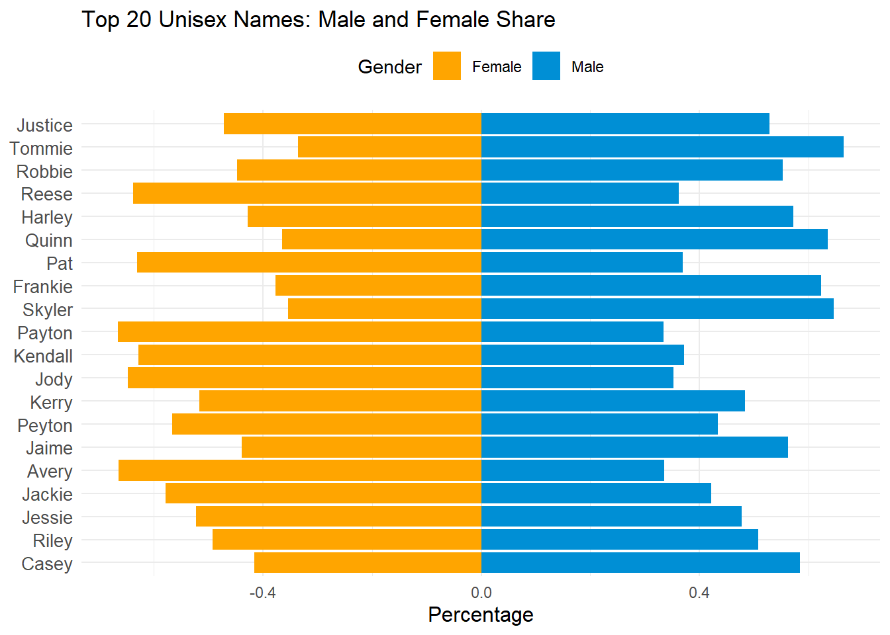
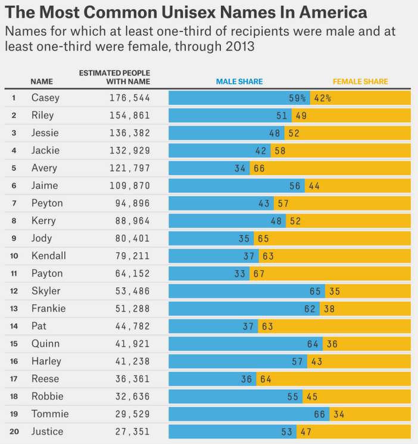

The article “The Most Common Unisex Names In America: Is Yours One Of Them?” on the FiveThirtyEight website provides information on the most common unisex names in America in which at least one-third of recipients were male and at least one-third were female, through the year 2013. To read the original article, please visit the FiveThirtyEight website.
The “unisex_names_table.csv” file contains the data used for this exercise. The dataset has 919 observations and five variables: “name” (first names from the Social Security Administration), “total” (total number of living Americans with the name), “male_share” (percentage of people with the name who are male), “female_share” (percentage of people with the name who are female), and “gap” (gap between male_share and female_share). To learn more about the data, please visit the GitHub website.
Part 2 - Re-create the Original Graphs
First, I used ChatGPT to help me try to re-create the original graph in the article “The Most Common Unisex Names In America: Is Yours One Of Them?” on the FiveThirtyEight website.
ChatGPT prompt:
“Write R code that re-creates the same graph titled”The Most Common Unisex Names In America” on the webpage https://fivethirtyeight.com/features/there-are-922-unisex-names-in-america-is-yours-one-of-them/ using the data of the first 20 observations from the unisex_names_table.csv file on the webpage https://github.com/fivethirtyeight/data/tree/master/unisex-names. Add thorough documentation to the code.”
Warning: package 'ggplot2' was built under R version 4.3.2
# Load the data from the CSV filedata_url <-"https://raw.githubusercontent.com/fivethirtyeight/data/master/unisex-names/unisex_names_table.csv"unisex_data <-read_csv(data_url)
New names:
Rows: 919 Columns: 6
── Column specification
──────────────────────────────────────────────────────── Delimiter: "," chr
(1): name dbl (5): ...1, total, male_share, female_share, gap
ℹ Use `spec()` to retrieve the full column specification for this data. ℹ
Specify the column types or set `show_col_types = FALSE` to quiet this message.
• `` -> `...1`
# Take only the first 20 observationstop_20_names <-head(unisex_data, 20)# Convert the 'name' column to a factor to ensure correct orderingtop_20_names$name <-factor(top_20_names$name, levels =unique(top_20_names$name))# Create the bar plotplot <-ggplot(top_20_names, aes(y = name)) +geom_bar(aes(x = male_share, fill ="Male"), stat ="identity", orientation ="y") +geom_bar(aes(x =-female_share, fill ="Female"), stat ="identity", orientation ="y") +scale_fill_manual(values =c("Male"="#008FD5", "Female"="#FFA500")) +labs(title ="Top 20 Unisex Names: Male and Female Share",x ="Percentage",y ="Name",fill ="Gender") +theme_minimal() +theme(legend.position ="top", axis.text.y =element_text(size =10),axis.title.y =element_blank(),axis.title.x =element_text(size =12))# Display the plotplot

Then I manually edited the code produced by ChatGPT to re-create the original graph as close as possible.
# Load necessary librarieslibrary(dplyr)
Warning: package 'dplyr' was built under R version 4.3.2
Attaching package: 'dplyr'
The following objects are masked from 'package:stats':
filter, lag
The following objects are masked from 'package:base':
intersect, setdiff, setequal, union
library(ggplot2)library(tidyr)library(scales)
Attaching package: 'scales'
The following object is masked from 'package:readr':
col_factor
# Load the data from the CSV fileunisex_data <-read_csv("unisex_names_table.csv")
New names:
• `` -> `...1`
Rows: 919 Columns: 6
── Column specification ────────────────────────────────────────────────────────
Delimiter: ","
chr (1): name
dbl (5): ...1, total, male_share, female_share, gap
ℹ Use `spec()` to retrieve the full column specification for this data.
ℹ Specify the column types or set `show_col_types = FALSE` to quiet this message.
# Create a new longitudinal dataset from "unisex_data" unisex_long <- unisex_data %>%pivot_longer(c(male_share, female_share), names_to ="gender", values_to ="shares")# Take only the first 40 observations (2 observations [male share and female share] for each of the 20 names)unisex_long_40 <-head(unisex_long, 40)# Relabel the categories for the "gender" columnunisex_long_40 <- unisex_long_40 %>%mutate(gender =ifelse(gender =="male_share", "MALE SHARE", "FEMALE SHARE"))# Create the stacked bar chartplot <-ggplot(unisex_long_40, aes(y =reorder(name, total))) +geom_bar(aes(x = shares, fill =factor(gender), group =factor(gender)), width =0.75, position ="stack", stat ="identity", orientation ="y") +geom_text(aes(x = shares, y =reorder(name, total), group =factor(gender), label =round(100*shares)), stat ="identity", orientation ="y", size =2, hjust =2, vjust =0, position ="stack") +scale_fill_manual(values =c("MALE SHARE"="#008FD5", "FEMALE SHARE"="#FFA500"), name =NULL) +labs(title ="The Most Common Unisex Names in America", subtitle ="Names for which at least one-third of recipients were male and at \n least one-third were female, through 2013",x =NULL,y =NULL,fill =NULL) +theme_minimal() +theme(legend.position ="top", axis.text.y =element_text(size =10, hjust =0),axis.title.y =element_text(angle =0, vjust =1),axis.title.x =element_text(),axis.ticks =element_blank(),plot.title =element_text(hjust =0, face ="bold")) +guides(fill =guide_legend(reverse=TRUE))
Warning in geom_text(aes(x = shares, y = reorder(name, total), group =
factor(gender), : Ignoring unknown parameters: `orientation`
# Display the plotplot
Here is the original graph for comparison:

Part 3 - Create a Publication Quality Table
First, I used ChatGPT to help me try to re-create the original table in the article “The Most Common Unisex Names In America: Is Yours One Of Them?” on the FiveThirtyEight website.
ChatGPT prompt:
“Write R code that creates a professional, publication quality table with 14 rows and 5 columns. The first row is the header row with bold capitalized font and contains the following input: NAME, TOTAL, MALE SHARE, FEMALE SHARE, and GAP. The first row is separated from the rest of the table with a bold line. The second row has the following input: Bless; 280, 50.00%; 50.00%; and 0.01. The third row has the following input: Camdyn; 3,275; 49.99%, 50.01%, and 0.02. The fourth row has the following input: Kodee; 533; 50.02%; 49.98%; and 0.03.”